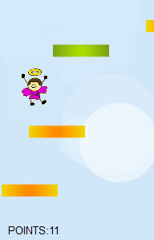
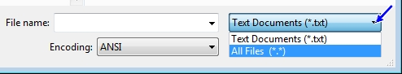
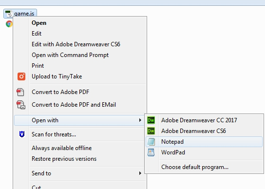

|
These directions will guide you through creating a very simple HTML5 and JavaScript based game called Stairs to Heaven. This is a very small, very simple game originally coded by Michal Budzynski for a coding competition (the game is based on Doodle Jump, an iPhone game from 2009). We are going to borrow it and use it to learn how a simple game is coded. Shhhh...don't tell Michal.
In Stairs to Heaven, you are a little angel character bouncing into the air...

The goal is to hit colored platforms that bounce the angel into the air as long as you can. The game ends when the angel falls to the bottom of the screen. To play the game and get an idea of how it works, go HERE.
To keep the file size of this game as small as possible, it only uses three files: the angel graphic, the JavaScript file that contains the game code, and an HTML document to insert and run the game in a browser. I will give you the angel graphic and all of the code, you just need to put it all together in a file, make some adjustments here and there, and understand how the game works.
Since our code uses HTML5 and JavaScript, the game will need to be played within a browser and we will need to create a small webpage to hold and display the game while being played. Don't worry, we are not going to take the time to learn how to create a fully functioning webpage (that information is covered in the Web Technologies course, which you can take next year), but we do need to work with some basic codes.
Keep in mind as you work through this project that our main goal here is get some exposure to coding. This is not intended to be a game that you are actively coding yourself, instead it is meant to serve as an introduction to coding so you can understand how things work and get a look at the structure. As you go along, pay attention to how things are put together. This will give you some great insight into how interested you are in moving on to actually writing your own game code in the future.
Before we start coding, we need to open a basic text editor. The code we are going to work with needs to be very basic, very simple text with no formatting (our browser will take care of applying formatting based on the code we input). We can't use sophisticated document editors like Microsoft Word or Apple Pages. Instead, we need what is known as a simple text editor. The good news is that most devices have a simple text editor built in.
What text editor you use is up to you, so take the time now to select one. Let me say this one more time because every year there are students who do not listen - DO NOT USE A DOCUMENT EDITOR SUCH AS MICROSOFT WORD. While it may seem like this will be helpful to you, the reality is that it will actually make your work harder as we move on.
Trust me on this.
CREATING THE WEB PAGE
So at this point you should have decided on a text editor and have it open on your device.
Let's get started by creating the HTML document that will hold our game and allow it to be played in a browser. The code is very simple and includes some basic CSS (Cascading Style Sheets, which is the coding method that allows us to format text and other objects within a webpage).
<html> <head> <title>Simple game with HTML5 Canvas</title> <style> body {
margin:0px; padding:0px; text-align:center; } canvas{
outline:0; border:1px solid #000; margin-left: auto; margin-right: auto; } </style> </head> <body> <canvas id='c'></canvas> <script src="game.js"></script> </body> </html> |
We are not going to spend a great deal of time discussing what each piece of the above code does because it is pretty simple and not really important for what we are doing. You do need to notice the canvas element. This element is used in HTML5 to have the browser dynamically (meaning automatically as needed) draw graphics using JavaScript as the user interacts with the page. For this game, we will be drawing a few simple items such as the jump platforms and the clouds (basically just white circles) you see in the first image on this page.
Notice also that the JavaScript file "game.js" is referenced. We have not created this file yet, but when we do we will already have the Web document ready to go to be able to view and play it.
Let's save this document on your device.
It is important that we create a folder to put the three pieces of our game in so that when the game is played the code is able to find all of the parts and the game will play as it should. If we don't save everything to one folder the game simply will not work.
SAVING IN TEXT EDITORS
A quick word about saving files in most text editors. Notepad, as an example, is a simple text editor that saves documents in the .txt (text) format. If we try to open a text file in a browser, nothing will work because browsers have no idea how to handle .txt files. Therefore, we must specifically indicate what type of file we are creating, which is why we must include the .html extension. When we create the JavaScript file in a moment, we will need to specifically indicate that the file is a .js file.
Also keep in mind that when you try to open a .html or .js file using Notepad as well as some other text editors, that you will need to change the document type...

from Text Documents to All Files before you will be able to see .html or .js files in the file list. Note that opening your folder and double-clicking the file does not always work. Doing this will open .html files (they just open in a browser), but it won't work for .js files. A quick and easy way to open .js files from your folder is to right-click the file, point at Open with, and choose your text editor from the program list...

Or you can open your text editor program and use File and then Open and then double-click the index.html from your SimpleGame folder.
CREATING THE JAVASCRIPT FILE
Ok, let's create some JavaScript. Let's start by creating a few global variables and define some of the canvas attributes.
var width = 1650, //Setting the width of the canvas height = 10, //Setting the height of the canvas gLoop, c = document.getElementById('c'),
//Creating the canvas itself ctx = c.getContext('2d');
//Setting the graphic context of the canvas //to 2d (3d is not widely supported) c.width = width; c.height = height; //Setting the canvas size |
Basically the code above creates and defines the canvas, or the area of our screen where all of the game action takes place, using JavaScript. As we work through the code, you will notice lots of comments. The comments are lines of code that start with with two forward slashes: //. These lines of code are usually placed below the piece of code they are describing. Comments are actually ignored by the browser when the game is running. This allows us to use comment lines to talk about a large variety of things without those lines interfering with game play. Comments are included in this tutorial to help you understand what is going on with the code.
TAKE THE TIME TO READ THROUGH THE COMMENTS
I have highlighted the comments in red in this tutorial to make it easier for you to see them (they will not be in red when you paste the code into your text editor) - READ THEM. Since working with code is likely new to you, reading the comments as you work through each Step will give you a better understanding of what is going on with each individual element of the game. Additionally, it will help you gain a better understanding of JavaScript and HTML5 (which is the entire point of doing this lesson) and will allow you to work toward creating more and more complicated games as you progress.
The code above will give us a box that is 1650 pixels wide and 10 pixels tall to play our game in. This is a really, really wide and really, really short box. Let's adjust these numbers to get a box that is a little easier to work with.
Let's save what we have so far and take a look at it in a browser.
You should have a blank rectangle similar to the image above. The canvas is blank because we haven't put anything on it yet.
DEALING WITH PROBLEMS
If your canvas does not look like the one above, or if you do not have a canvas showing up at all, then you have an issue that you need to fix. There are several things you can check at this point to see if they are the problem:
If all of the above items check out and you still have problems, then you did something wrong outside of the directions. Your best bet at this point is to delete the files you have saved up to this point and to start over, this time actually reading the directions carefully and following along with what they say. Keep in mind that if your game does not work that YOU DID SOMETHING WRONG. Please DO NOT ask your teacher to debug your code for you. They won't do it. You need to figure out what the problem is because working with the code is the ENTIRE REASON WE ARE DOING THIS. Once everything is entered correctly your game will work.
| Let me say a quick word about encountering bugs (problems) with your games. It is important to note that troubleshooting (finding and fixing problems with your game) is a necessary part of being a game designer. Every game you create will have some kind of problem with it as some point - this is normal and is actually expected and what you want. Accept that you will have problems, and work through them - just as you should have worked through the 6 above items if your game had issues - and use them as learning experiences. There has never been a game created that had zero issues - all games require some adjustments. Realize at this point that tweaking your games is an expected step in the game creation process. |
CONTINUE BUILDING THE JAVASCRIPT GAME
OK, back to our game.
An important thing to remember about working with the canvas element is that objects do not actually move on the canvas surface like an animated graphic. Instead, the entire canvas is very quickly re-drawn to create the illusion of motion. In other words, things don't actually move, but pop up in sequence to simulate motion. Because of this, we need to insert some code to clear the canvas after each instance of motion.
For pretty much all of the code we will be inserting in these tutorials, we will want to leave a blank line between the existing text and the new text.
var clear = function(){
ctx.fillStyle = '#d0e7f9'; //Sets the background color to #d0e7f9, which is a light blue ctx.clearRect(0, 0, width, height); //Clears the contents of the canvas ctx.beginPath(); //Start drawing on the canvas ctx.rect(0, 0, width, height); //Draw a rectangle from point (0, 0) - which is //the upper left hand corner of the rectangle - //to the width and height you set earlier //and covering the entire canvas ctx.closePath(); //End drawing on the canvas ctx.fill(); //Fill rectangle with the active color - //the light blue - defined earlier } |
Reading through the above code, you should notice the repeated use of ctx. This is commonly used in JavaScript when working with the canvas element. It is short for ConTeXt, and allows us to create an Array (a variable with multiple values), which shortens and simplifies our code.
Note that the first comment above tells us that the code is creating a simple colored (light blue) background (to represent the sky). This is a little boring, so let's add some excitement with some moving clouds. Since this is a simple game, we do not want to get overly fancy with our clouds. We are just going to use a few circles of varying size and transparency.
var howManyCircles = 10, circles = []; for (var i = 0; i < howManyCircles; i++) circles.push([Math.random() * width, Math.random() * height, Math.random() * 100, Math.random() / 2]); //This defines the x & y positions of our clouds, //radius from 0-100 (how wide the circles are), transparency from 0-0.5 //(0 is invisible and 1 is solid); we want all of the clouds to be //somewhat transparent - this is what the divide by 2 at the end does var DrawCircles = function(){
for (var i = 0; i < howManyCircles; i++) {
ctx.fillStyle = 'rgba(255, 255, 255, ' + circles[i][3] + ')'; //The three 255's define white (hex color) with the var i on the previous line //defining transparency in red/green/blue color scheme ctx.beginPath(); ctx.arc(circles[i][0], circles[i][1], circles[i][2], 0, Math.PI * 2, true); //Arc with the following definitions: x, y, radius, startAngle, endAngle, anticlockwise ctx.closePath(); ctx.fill(); } }; |
Take a second and locate the
ctx.fillStyle line of code. Notice that is is equal to multiple values? By doing this, we have actually created an Array inside of an Array. There are other ways to pull this off, but it turns out that this method is one of the best ways to get circles to move in 2D (up and down and left and right).The next thing we need to add is a function that will move the clouds down a few pixels to simulate motion. Also, we want clouds to constantly appear at the top of the canvas while those that reach the bottom disappear.
var MoveCircles = function(e){
for (var i = 0; i < howManyCircles; i++) {
if (circles[i][1] - circles[i][2] > height) {
//Once a circle reaches the bottom of the screen //we change it's settings circles[i][0] = Math.random() * width; circles[i][2] = Math.random() * 100; circles[i][1] = 0 - circles[i][2]; circles[i][3] = Math.random() / 2; } else {
//Move circle (change in Y axis) e pixels down: circles[i][1] += e; } } }; |
Make sure you are reading the comments to get a better understanding of what is going on with our game. You should notice that the top part of the code relates to what happens to our clouds when the reach the bottom of the screen while the lower part covers moving the clouds down.
The final thing we need to do before we take a look at what we've got so far is to create a main game loop to connect together everything we have created to this point. We need to have each frame clear the screen, move the circles down 5 pixels, redraw them, and after 1/50th of a second call the next frame of motion.
var GameLoop = function(){
clear(); MoveCircles(5); DrawCircles(); gLoop = setTimeout(GameLoop, 1000 / 50); } GameLoop(); |
Notice the loop references at the very end? If you refer back to the first section of code that you copied, you will notice that the 5th line of code contains
gLoop. The gLoop in the code above is making a direct reference to that first gLoop and allows the clouds to scroll continually. I know, cool.By the way, remember where the
var GameLoop variable is located in the code above (it is at the very top of the box) as we will be making changes to it in each of the next 4 Steps.Let's save the code that we have created for our game up to this point and have a look at in a browser.
When looking at the files that are in your SimpleGame folder, you should have two files: index.html (which is the webpage that opens in a browser) and game.js (which is the actual code for the game itself that runs inside the index.html page).
That's all for this first Step. In the next Step, we will get a character into our game.